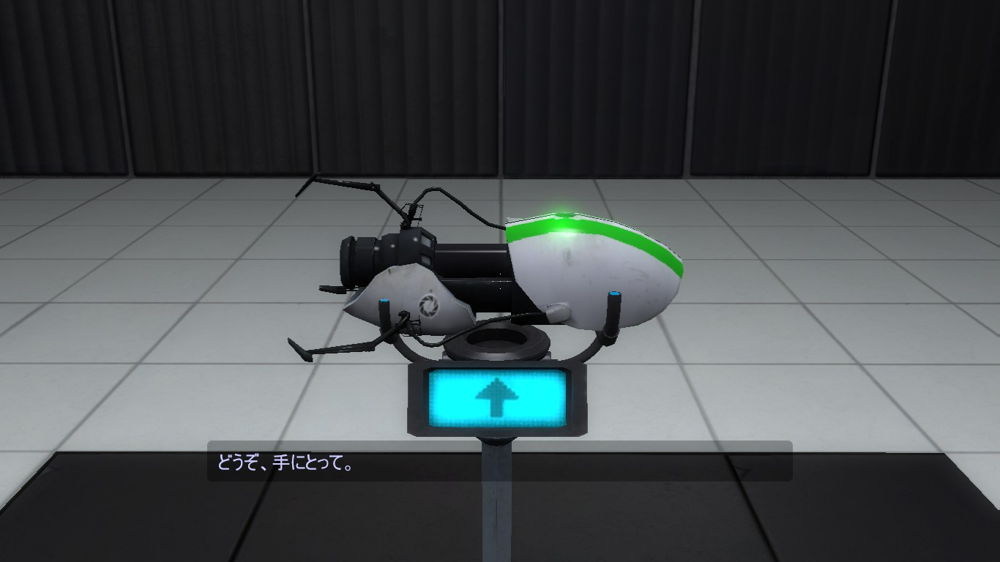
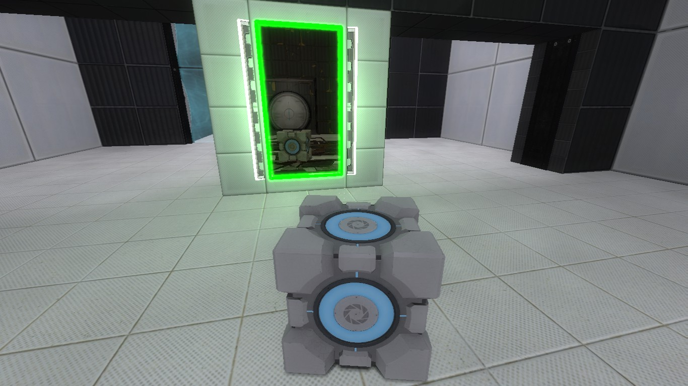
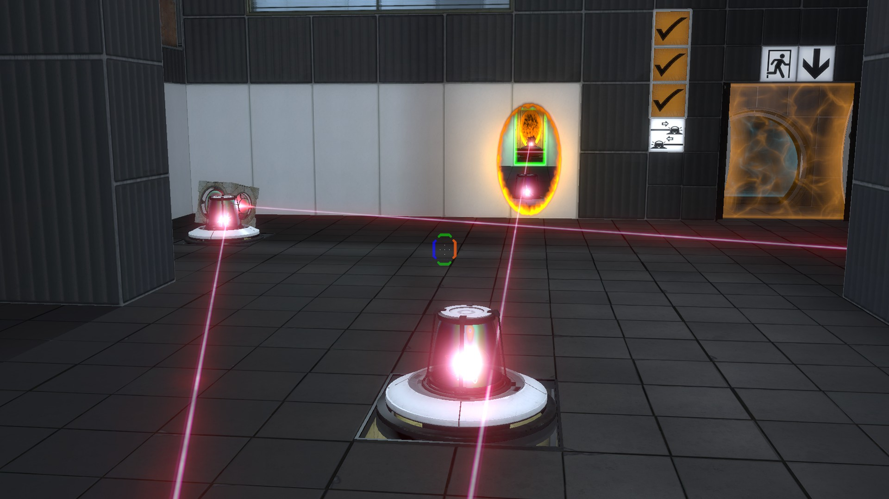
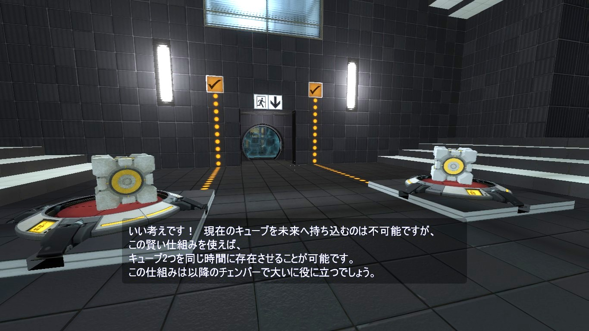
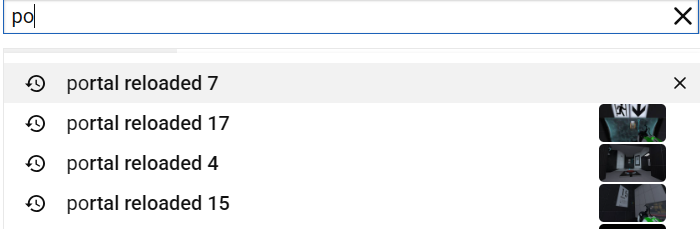

Portal Reloadedをクリアできない（追記）
Portal Reloadedをクリアできない（追記）
（2026年10月17日 追記アリ）
さて、この頃すっかりPortalシリーズの派生作品にハマっているわけだが、また新しいMOD『Portal Reloaded』に手を出してみた。
今まで遊んだMODよりも古めだが、これも結構レビューが多いので気になっていたのだ。
うん、とりあえず途中まで遊んだけども、一旦言わないと気が済まない。

これはバカが軽々しく手を出していいゲームじゃなかったよ
この前遊んだ、とても難しいと評判の『Portal Stories: Mel』の難易度なんか、これと比べたらイージーモードでしかない。
あっちが「Portal2じゃ物足りない玄人向けゲーム」とするなら、この『Portal Reloaded』は
☆今すぐにでもイライラしたい人向けゲーム
☆自分が一体どれだけバカで無能なのか思い知りたい人向けゲーム
☆パズルが解けなければ解けないほど興奮して仕方がない変態向けゲームである。
そんな
異常者向けゲームを楽しみ、同時に苦しめられた感想を今回は書き残しておこうと思う。
イライラが止まらないので今回は最後まで遊んでない！
良かった点
➊ 本家にない「第3のポータル」
本家ではおなじみの、空間を行き来できる青とオレンジのポータルに加えて、『Portal Reloaded』では第3のポータルである
「タイムポータル」というものが登場する。バカには理解できない。
これは現在⇔20年後を行き来できるポータルで、とてもきれいな状態の現在のチェンバーと、老朽化しまくってボッロボロな20年後の同チェンバーを行ったり来たりしてテストを解いていく。空間の行き来だけでなく時間軸も行き来してみよう！という設定がめちゃくちゃユニーク。
未来のものを現在に持ち込めたり、逆のことはできなかったり、現在のポータルは未来にも同じ位置に配置されたり、などと大量の法則を覚えないといけない。
バカには理解できない。
▲今作のポータルは全部めっちゃ眩しい。もう少し明度低めでもよかったと思う
➋ テスト以外のコンテンツが皆無
このゲーム、なんと実績が1つもない。タレット以外のロボットはゲームに登場しない。人格コア達もいない。GLaDOSもケイブ・ジョンソンもいない。ゲーム自体にストーリーはあるけどほぼ存在感はない。つまるところ、キャラクターというものが全くゲーム内に登場しないので、ファンがファンアートを描けないゲームだね！！
開発者の「私たちはとにかくテストが解きたいだけです」「テストさえあれば何もいらない」「アパチャーサイエンス万歳」という、テストへの愛を、ひたすらに感じる。
開発者はさぞ変態なんだろうね。
➌ 自力で解けると超スッキリ
『Portal Stories: Mel』を遊んだ時と同じような褒め言葉にはなるが、このゲームはあらゆるテストの難易度が容赦なくて苦笑レベルなので、ごくまれに自力で出口に辿り着けると、ドーパミンがとんでもない。溢れ出るドーパミンで私は溺死する。自分の脳みそのシワの1つ1つの隅々までドーパミンが満ちていくのを感じる。
開発者はさぞ変態なんだろうね。
▲理解していないのに解けた例。どうやって解いたのかもうお前に説明できない。偶然の産物。
難しすぎてバカには楽しめない

▲この辺りで嫌な予感はした。理解より先に字幕に置いて行かれるしパニック
このゲームは本当にもう、ただただ、これに尽きる。
私はバカです。なのでこのゲームを楽しめるほどの余裕がありませんでした。
難しいテストばかりで、何時間かけてもわからず、嫌な思いをしながら攻略動画を見て、攻略動画のやり方を再現してテストを終えます。悔しくてイライラします。
そして次のテストでもまた同じように何時間も部屋から出られなくなります。
攻略動画を見ないとゲームを進めることすらできず、自分がなぜ生きているのかすら、分からなくなってきました。

▲Youtubeの検索履歴もこの通りである。生きるって、恥だ。
このゲームを遊んでいると、まるで『Portal2』のウィートリーになった気分になる。人間を全員ジャガイモにしてやりたい。（ウィートリーはそんなセリフありません）
攻略見たチェンバーは以下：
4、8、10、12、15、17以下略
チェンバー４のテストなんか、まだチュートリアル中だぞ！
チェンバー17のテストに関しては、バカかどうか関係なく誰でも困惑するはず。ほぼバグみたいな挙動でクリアするから信じられない。
攻略動画のコメント欄に、「自力で解けたが、私は何かチート行為をしてしまったのか？」と心配した天才プレイヤー達がめちゃくちゃ集まっていた。解けても解けなくてもスッキリしないテストってどういうこと？？？汗汗汗
Steamのレビューに「一見難しそうに見えるがタイムポータルの特性をしっかり把握すれば詰まることは無いでしょう」とか書いてる、どこの誰かも知らん他人に殺気を覚えた。
お前本当にチェンバー17のテストやったか？
このゲームは、心に余裕があるときにまた遊ぼうと思う。そんな日が来ればの話だが。
クリアした
なんと、このゲームを最後までクリアできた。
考えてもわからない事を考えまくったって意味ねえんだよ、と開き直ってプレイを続けたものの、だんだん攻略動画を見ないで自力で解けることが増えていき、気が付けばあっさりと最終テストも終わっていた。
エンディングはあまりにも簡潔でびっくりした。なので本当に、開発者たちはテストにしか興味がないんだと思います。
今現在Half-Life２をプレイしているというのもあり、エンディングでちょっと笑ってしまった。これ、バッドエンドかな？！
2026/09/13